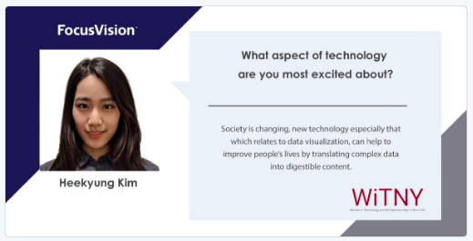

♣ Work Timeline
|  |
-
Jan.2018 - Jan.2018
Focus Vision, New York, NY
Quantitative Research Intern
○ Created a diagram of the integrated internal product databases and systems architecture by using Microsoft Visio
○ Mapped internal and external user journeys to enhance and clarify visualization of six (6) research platforms
○ Obtained and analyzed feature usage data for 2017 of the research platforms with Python and Power BI
○ Researched and identified open source recommender systems to layer on top of feature usage data
-
Mar.2014 - Jun.2014
Forest Inn, Imari city Japan
Hotel Front Desk Intern
○ Conducted preparations for weekly five plus (5+) meetings and seminars with 20+ other employees from each department
○ Mapped internal and external user journeys to enhance and clarify visualization of six (6) research platforms
○ Obtained and analyzed feature usage data for 2017 of the research platforms with Python and Power BI